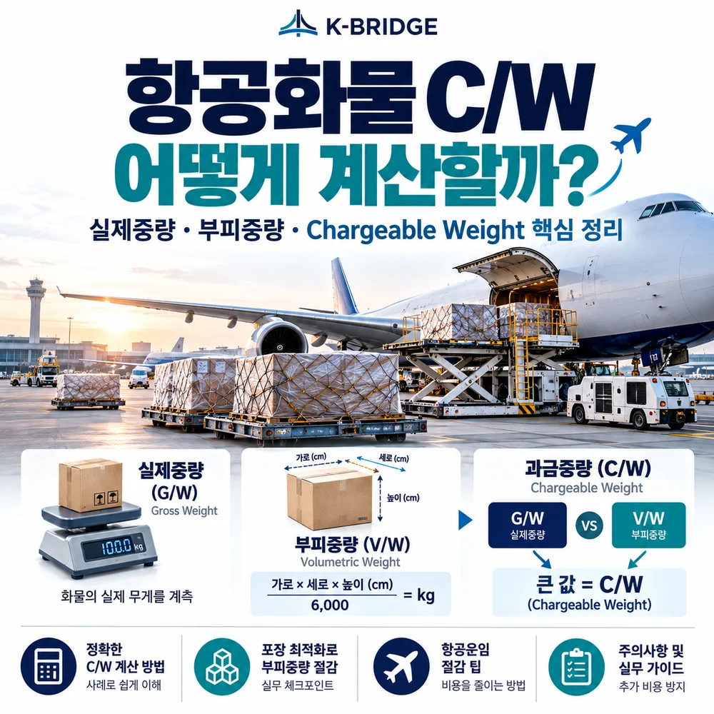
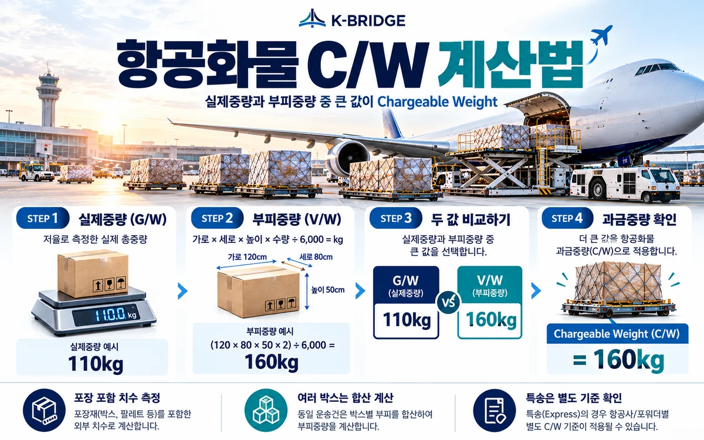
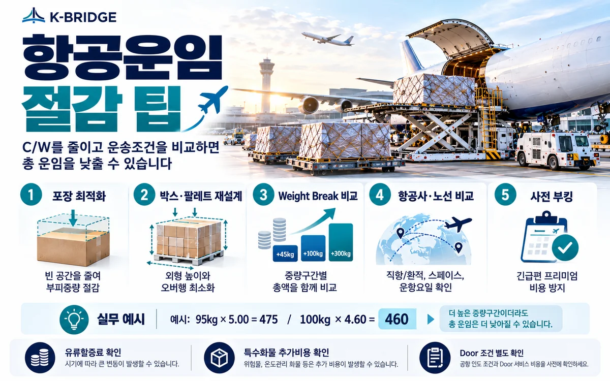

먼저 결론부터
항공화물 C/W(Chargeable Weight)는 일반적으로 실제중량(Gross Weight)과 부피중량(Volumetric Weight)을 비교해 더 큰 값을 적용합니다. 일반 국제 항공화물은 통상 6,000cm³ = 1kg의 밀도비를 사용하므로, 가볍지만 부피가 큰 화물은 실제 무게보다 훨씬 높은 C/W가 나올 수 있습니다.
1. C/W(Chargeable Weight)란?
직접 답변: C/W는 항공운임을 계산할 때 적용하는 ‘과금중량’입니다.
IATA와 대한항공의 공개 규정에 따르면 항공화물의 중량운임은 실제 총중량(Actual Gross Weight)과 부피중량(Volume Weight) 중 더 큰 값을 기준으로 계산합니다. 즉 화물이 가벼워도 항공기 화물칸을 많이 차지하면 공간에 대한 비용이 반영됩니다.
솜·완충재·가벼운 플라스틱 제품처럼 무게 대비 부피가 큰 화물은 V/W가 C/W가 되기 쉽고, 금속부품처럼 밀도가 높은 화물은 실제중량이 C/W가 되는 경우가 많습니다.

2. 항공화물 부피중량 계산 공식
일반 국제 항공화물에서 가장 많이 사용하는 공식은 ‘총 부피(cm³) ÷ 6,000’입니다.
기본 공식
V/W(kg) = 가로(cm) × 세로(cm) × 높이(cm) × 수량 ÷ 6,000
포장이 여러 개이고 크기가 같다면 수량을 곱하면 됩니다. 크기가 서로 다르면 각 포장의 최대 외형 치수로 부피를 구한 뒤 모두 합산해 6,000으로 나누는 방식으로 계산합니다.
DHL Global Forwarding은 항공화물의 밀도비를 1:6으로 설명하고 있으며, IATA 공개 자료와 대한항공 국제화물 운임 안내 역시 6,000cm³를 1kg으로 환산하는 기준을 제시합니다.
주의: 국제특송이나 특정 계약상품은 별도의 Dimensional Weight 기준을 사용할 수 있습니다. 항공화물 6,000 공식을 모든 특송상품에 그대로 적용하면 안 됩니다.
3. 실제 계산 예시 / 박스 2개라면?
| 항목 | 조건 | 계산 |
|---|---|---|
| 수량 | 동일 박스 2개 | 2 PCS |
| 박스 크기 | 120 × 80 × 50 cm | 1개당 480,000cm³ |
| 총 부피 | 480,000 × 2 | 960,000cm³ |
| 부피중량 V/W | 960,000 ÷ 6,000 | 160kg |
| 실제 총중량 G/W | 포장 포함 | 110kg |
| Chargeable Weight | 110kg vs 160kg | 160kg 적용 |
실제 무게는 110kg이지만 공간 기준으로는 160kg에 해당하므로 이 화물은 일반적으로 160kg C/W를 기준으로 항공운임이 계산됩니다.
4. Weight Break를 알면 C/W가 높아져도 총 운임이 낮아질 수 있습니다
항공운임은 중량이 늘어날수록 kg당 요율이 낮아지는 구간이 있을 수 있습니다.
대한항공의 공개 운임 안내와 IATA 자료는 더 높은 중량단계의 낮은 요율을 적용했을 때 총 운임이 오히려 낮아지는 경우 그 높은 중량을 과금중량으로 적용할 수 있음을 설명합니다.
| 가상 예시 | 적용요율 | 총 중량운임 |
|---|---|---|
| C/W 95kg 그대로 | 5.00 / kg | 475 |
| 100kg Weight Break 적용 | 4.60 / kg | 460 |
위 숫자는 원리 설명용 가상 예시입니다. 실제 중량단계와 요율은 항공사·노선·품목·계약에 따라 달라집니다.

5. 항공운임을 줄이는 실무 팁
- 박스의 빈 공간부터 줄이세요. C/W가 부피중량으로 결정되는 화물은 포장 5~10cm 차이도 여러 박스가 합쳐지면 큰 중량 차이가 됩니다.
- 제품에 맞는 외포장 규격을 다시 설계하세요. 포장 안전성을 해치지 않는 범위에서 분해·중첩·압축 포장이 가능하면 부피중량을 낮출 수 있습니다.
- 팔레트 오버행과 불필요한 높이를 줄이세요. 실제 적재 외형을 기준으로 보기 때문에 팔레트 밖으로 튀어나온 박스와 과도한 상부 공간이 비용을 키울 수 있습니다.
- Weight Break별 총액을 비교하세요. 현재 C/W만 곱하지 말고 다음 중량단계의 낮은 kg당 요율까지 계산해 실제 총액이 더 낮은지 확인합니다.
- 항공사·노선·출발일을 함께 비교하세요. 같은 목적지라도 직항·환적, 여객기 Belly·화물기, 운항요일과 스페이스 상황에 따라 요율이 달라집니다.
- 급하지 않은 화물은 사전부킹으로 선택지를 넓히세요. 긴급편이나 우선탑재가 필요한 상황을 줄이면 프리미엄 비용을 피할 가능성이 높아집니다.
6. 2026년 최신 체크포인트 / 항공화물 수요는 여전히 증가세
IATA가 2026년 9월 29일 발표한 최신 글로벌 항공화물 자료에서 8월 CTK는 전년 동월 대비 4.4% 증가했고, 공급능력(ACTK)은 0.1% 감소했습니다. 국제선 수요는 5.3% 증가했습니다.
이 수치가 개별 항공운임을 직접 결정하는 것은 아니지만, 수요가 강한 구간에서는 스페이스와 요율 선택 폭이 줄어들 수 있으므로 C/W 최적화와 사전부킹의 중요성이 커질 수 있습니다.
또한 항공사 공지에 따라 유류할증료 등 일부 중량 기반 부대비용은 C/W를 기준으로 계산되는 경우가 있습니다. 따라서 부피중량을 낮춰 C/W가 줄어들면 기본 운임뿐 아니라 일부 부대비용에서도 절감효과가 생길 수 있습니다.
7. 견적 요청 전에 이것만 알려주시면 C/W를 빠르게 계산할 수 있습니다
- 포장 수량: 총 몇 박스·몇 팔레트인지
- 각 포장 외형: 가로 × 세로 × 높이(cm)
- 각 포장 실제중량: 포장재 포함 kg
- 출발지·도착지: 공항 기준 또는 Door 조건
- 품목: 일반화물, 배터리, 위험물, 냉장·냉동 등 특수조건 여부
- 희망 일정: 출고 가능일과 필요한 도착일
이 정보가 있으면 포워더는 G/W와 V/W를 비교해 예상 C/W를 계산하고, 항공사별 Weight Break와 가능한 스케줄을 함께 비교할 수 있습니다.
KEY TAKEAWAYS
이 글에서 기억할 것
- 실제중량 G/W
- 부피중량 V/W = cm³ ÷ 6,000
- 큰 값 = C/W
- 포장·Weight Break로 비용 최적화
8. 자주 묻는 질문
Q. 항공화물 C/W는 무엇인가요?
Q. 부피중량은 어떻게 계산하나요?
Q. 실제중량 100kg, 부피중량 160kg이면 운임은 몇 kg 기준인가요?
Q. 부피중량을 줄이면 항공운임도 바로 줄어드나요?
Q. 실제 C/W보다 높은 중량을 적용하는 것이 더 저렴할 수도 있나요?
Q. 6000으로 나누는 공식은 모든 국제특송에도 동일한가요?
NEXT STEP
이 글과 함께 보면 좋은 자료
항공운임은 kg당 요율보다 C/W부터 정확히 봐야 합니다
케이브릿지는 포장 규격과 실제중량을 기준으로 Chargeable Weight를 계산하고, 항공사·Weight Break·스케줄을 함께 비교해 합리적인 운송안을 검토합니다.